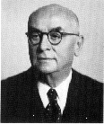

Mahmut Celal Bayar (1883-1986)

Türkiye Cumhuriyeti'nin üçüncü cumhurbaþkanýdýr. II. Abdülhamid, Meþrutiyet, Cumhuriyetin ilaný ve Tek Parti dönemi, çok partili hayata geçiþ, 27 Mayýs 1960 askeri darbesi gibi çok büyük çalkantýlarýn yaþandýðý bir asýrda yaþamýþtýr. Çok partili hayata geçiþe imkan saðlayan çalýþmalarýn etkin simalarý arasýnda yer almýþtýr. Darbeyle indirilip ölüm cezasýna çarptýrýlan cumhurbaþkaný olarak tarihe geçmiþtir. Demokrat Partinin kuruluþuyla Demokratikleþme, hürriyetlerin alanýnýn geniþletilmesi çabalarýna önemli katkýlarda bulunduðu gibi, din ve vicdan özgürlüðünü kýsýtlamak için kullanýlan TCK'nýn 163. maddesinin yasalaþmasýnda (10 Haziran 1949) Cumhuriyet Halk Partisinin tezlerini desteklemekten geri durmamýþtýr.Celal Bayar, 1883 yýlýnda Bursa'nýn Gemlik ilçesine baðlý Umurbey köyünde dünyaya gelmiþtir. 187778 OsmanlýRus savaþý (93 Harbi) sýrasýnda Plevne'den Bursa bölgesine göç eden bir aileye mensuptur. Babasý ilmiye sýnýfýna mensup olan Abdullah Efendidir. Annesinin adý Emine hanýmdýr. Ýlk ve orta öðrenimini babasýnýn yanýnda Umurbey'de yapmýþtýr.
Bayar, ilk olarak Gemlik Reji Ýdaresi'nde çalýþmaya baþladý. Daha sonra mahkeme kaleminde ve bunun ardýndan da Ziraat Bankasýnda çalýþtý. Bankacýlýk iþine, Deutsche Orientbank'ta devam etti.
Bayar, dayýsý Mustafa Þevket'in tesiri ve yönlendirmesiyle siyasete ilgi duymaya ve bu alanla ilgilenmeye baþladý. Ýttihat ve Terakki'ye duyduðu ilginin tesiriyle 1907 yýlýnda bu cemiyete girdi. II. Meþrutiyetin ilanýndan sonra cemiyette aktif görevler almaya baþladý. Önce Bursa, ardýndan Ýzmir þubeleri baþkanlýðýnda bulundu. Ýzmir'de bulunduðu sýrada Birinci Dünya Savaþý baþladý. Savaþ sýrasýnda Halka Doðru Cemiyeti'ni kurdu. Bu cemiyetin yayýn organý olan Halka Doðru Mecmuasý'ný 1 Þubat 1919 tarihinden itibaren yayýnlamaya baþladý. Mecmuada makalelerini Turgut Alp imzasýyla yayýnladý.
Bayar, yurdun iþgaline paralel olarak kurulan müdafaa cemiyetlerinden olan ve Ýzmir bölgesinde faaliyet gösteren Reddi Ýlhak ve Müdafaa-i Hukuku Osmaniye cemiyetinde çalýþtý. Yunan iþgaline karþý halkýn organize edilmesi ve halkýn iþgale karþý direniþe geçmesi için yapýlan faaliyetlere katýldý. Bu amaçla Ýzmir'den Ödemiþ'e geçti. Hoca kýyafetiyle halkýn arasýna karýþtý. Ayrýca isim olarak da "Galib Hoca" adýný kullandý. Bu adla çeþitli yerleþim yerlerini dolaþtý. 28 Haziran 1919 tarihinde Balýkesir'de gerçekleþtirilen kongrede milli alay kumandaný olarak tayin edildi.
Bayar, son Osmanlý Mebusan Meclisi'ne Saruhan mebusu olarak seçildi. Mecliste yaptýðý konuþmalarla dikkatleri üzerine çekti. Ýstanbul'un iþgali ve Mebusan Meclisi'nin daðýtýlmasýndan sonra Ankara'da toplanan Büyük Millet Meclisi'ne de Saruhan mebusu olarak katýldý. Bu arada TBMM ile Çerkez Ethem arasýnda arabuluculuk yapmak amacýyla teþkil edilen kurula seçildi ve Çerkez Ethem ile görüþmelerde bulundu. Yine M. Kemal'in isteðiyle kurulan Türkiye Komünist Fýrkasý'nýn kurucularý arasýnda yer aldý. Mecliste aktif olarak çalýþtý ve 27 Þubat 1921 tarihinde Ýktisat Bakanlýðýna atandý. Bir yýla yakýn bu görevi sürdürdü. Bir ara Dýþiþleri Bakanlýðýna vekalet etti.
Bayar, Kurtuluþ Savaþý'nýn kazanýlmasý sonrasýnda toplanan Lozan Konferansý'na katýlan heyetin iktisat müþavirliðini üstlendi. 1923 yýlýnda yapýlan seçimlerde, Anadolu ve Rumeli Müdafaa-i Hukuk Cemiyeti'nin adayý olarak Ýzmir milletvekilliðine seçildi. 1924 yýlýnda Ýþ Bankasý'ný kurmakla görevlendirildi. Bankanýn genel müdürlüðüne atandý ve bu görevi 1932 yýlýna kadar sürdürdü. 193237 yýllarý arasýnda yeniden Ýktisat vekilliðine getirildi.
Bu arada baþbakan olan Ýsmet Ýnönü ile iktisadi görüþlerinin farklý olmasýna raðmen, bu kadar uzun süre bakanlýk yapmasýný, "Atatürk empoze etti" (Cemil Koçak; Türkiye'de Milli Þef Dönemi, I. C., Ýletiþim Y., Ýstanbul 1996, s. 38) þeklinde cevaplandýran Bayar, ayrýca, bu göreve Ýnönü'ye raðmen getirilmediðini, Ýnönü ve M. Kemal'in aralarýnda anlaþtýklarýný da belirtmiþtir.
Bayar, 1937 yýlý sonlarýnda Ýsmet Ýnönü'nün yerine Baþbakanlýða atandý. Bu görevi de bir ara istifa etmesine raðmen, tekrar atanýp 25 Ocak 1939 tarihine kadar sürdürdü ve bu tarihte istifa etti. Ayný yýl içinde baþlayan II. Dünya Savaþý sýrasýnda, siyasi açýdan önemli bir faaliyette bulunmadý. 1945 yýlý bütçe görüþmeleri sýrasýnda muhalif grup arasýnda yer aldý. Fuat Köprülü, Adnan Menderes, Refik Koraltan ile birlikte 7 Haziran 1945 tarihinde meclis gurubuna verdikleri "dörtlü takrir" ile parti tüzüðünde bazý deðiþikliklerin yapýlmasýný istedi. Önergeleri reddedilip, arkadaþlarýndan Menderes ve Köprülü partiden ihraç edilince, önce milletvekilliðinden, ardýndan da CHP'den istifa etti.
Bayar, 7 Ocak 1946 yýlýnda Menderes, Köprülü ve Koraltan ile birlikte Demokrat Parti'yi kurdu. DP'nin genel baþkanlýðýna getirildi. 1950 seçimlerinde 487 milletvekilliðinin 408'inin kazanýlmasýndan (14 Mayýs) sonra 384 oyla 22 Mayýs 1950'de Cumhurbaþkanlýðýna seçildi. 27 Mayýs 1960 askeri darbesi ile tutuklanarak arkadaþlarý ile birlikte Yassýada Mahkemesinde yargýlandý ve on beþ parti arkadaþý ile birlikte ölüm cezasýna çarptýrýldý. Bunlardan üçünün (Menderes, Zorlu, Polatkan) cezasý Milli Birlik Komitesi tarafýndan onaylandý. Kendisinin cezasý yaþlýlýðý sebep gösterilerek müebbet hapse çevrildi. 7 Kasým 1964 tarihine kadar Kayseri Cezaevi'nde kaldýktan sonra, saðlýk sebebiyle serbest býrakýldý.
Bayar, hapisten çýktýktan sonra "Ben de Yazdým" adýyla 8 ciltten oluþan anýlarýný yayýnladý. Bizim Ev adýyla bir kulüp kurarak siyasi yasaklarýn kaldýrýlmasý için mücadele verdi. 1973 yýlýnda AP'den ayrýlan milletvekili ve senatörlerin kurduðu Demokratik Parti'yi destekledi. AP'den bu partiye geçilmesi faaliyetlerine destek verip, teþvik etti. Ancak, daha sonra Demokratik Partiden büyük bir gurubun AP'ye geçmesi üzerine 1975 yýlýnda AP'yi destekledi. Demirel ile birlikte mitinglerde konuþmalar yaptý.
Bayar, bir darbeyle siyasi haklarý elinden alýnýp, üç arkadaþý idam edilmesine raðmen 12 Eylül 1980 askeri darbesini destekledi. Darbecilerin hazýrlamýþ olduðu 1982 Anayasasýný da savundu. 22 Mayýs 1986 tarihinde, 103 yaþýnda Ýstanbul'da öldü. Cenazesi devlet töreni ile kaldýrýldýktan sonra kendi köyü olan Umurbey'de topraða verildi.
CHP'nin tek baþýna iktidarda bulunduðu uzun yýllar boyunca sadece Risale-i Nurlarý yazmakla ve iman hizmetiyle meþgul olan Bediüzzaman Said Nursi, Demokrat Parti'nin kuruluþundan itibaren açýk bir þekilde Demokrat Parti'ye destek verdi. Bu arada seçimleri kazandýktan sonra Cumhurbaþkanlýðýna seçilen Celal Bayar'a gönderdiði tebrik telgrafýnda; "Zatýnýzý tebrik ederiz. Cenabý Hak sizi Ýslâmiyet ve vatan ve millet hizmetinde muvaffak eylesin" (Emirdað Lahikasý, s. 264) dileðinde bulundu. Bayar da; "Samimi tebriklerinizden fevkalade mütehassýs olarak teþekkür ederim" (Emirdað Lahikasý, s. 265) telgrafýyla karþýlýk verdi. Bediüzzaman Cumhurbaþkaný ve bakanlara açýk mektuplar yayýnlayarak, din ve vicdan özgürlüðü konusunda yaptýklarý çalýþmalara destek ve teþviklerde bulundu.
Bayar, Cumhuriyet tarihimiz boyunca önemli izler býrakan bir þahsiyet olarak tarihe mal oldu. Özellikle CHP'nin katý politikasý karþýsýnda muhalefette bulunmasý, yine bu partinin oluþturduðu jandarma ve bürokrat tahakkümüne dayanan parti politikasýna karþý çýkýþý, hürriyet ve demokrasi alanýnda özgürlüklerin geniþletilmesine yönelik faaliyetleri, halkýn büyük teveccühüne ve desteðine vesile oldu. Her ne kadar bu dönemde, partinin ve özellikle Menderes'in iktidarý vatandaþa yakýnlaþtýrmasý saðlanmýþsa da, devletmillet kaynaþmasýna yönelik faaliyetler Bayar'ýn da siyasi hayatýnda çok önemli kazanýmlara vesile oldu. Çok partili siyasi hayata geçiþ ve demokratikleþme çalýþmalarýnda önemli ölçüde katkýda bulunurken öte yandan, dini özgürlükler konusunda ayný gayreti gösterdiði söylenemez.
Bayar, yýllar boyunca inançlý kesim üzerinde büyük bir baský aracý olarak kullanýlan, irtica bahanesiyle çok sayýda insanýn takibata uðratýlmasýna, hapse atýlmasýna sebep teþkil eden Türk Ceza Kanunun 163. maddesinin çýkarýlmasý faaliyetlerinde, CHP'li baþbakan Þemsettin Günaltay'ý ülkede irtica tehlikesinin varlýðýna ikna edilmesi konusunda önemli gayret gösterdi. Ýstiklal Mahkemelerinin kapatýlmasý gerekçe gösterilerek 1951 yýlýnda 5816 sayýlý Atatürk'ü Koruma Kanununun çýkarýlmasý için aktif çaba gösterdi.
Bayar, II. Dünya Savaþý'ndan sonra dünya genelinde meydana gelen deðiþiklikleri yakýndan izledi. Türkiye'nin Kore'ye asker göndermesi, NATO'ya girilmesi, Baðdat Paktý'nýn kurulmasý gibi uluslararasý meselelerde önemli katkýlarda bulundu. Ayrýca, Türkiye, Yunanistan ve Yugoslavya arasýnda üçlü paktýn kurulmasýna da ön ayak oldu. Diðer taraftan ülkeye yabancý sermayenin getirilmesi, dýþ politikada Batý yanlýsý tavýr takýnýlmasý gibi konularda da etkileyici bir rol üstlendi.